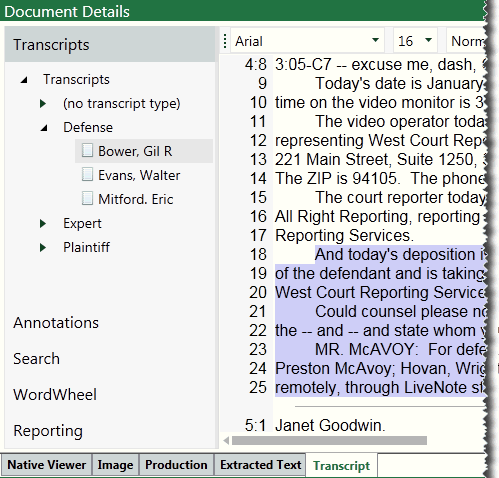

Eclipse allows you to include transcripts with your cases. In addition to including transcripts, Eclipse Administration provides options for managing transcripts and identifying transcript issues.
This page contains the following content:
Related pages:
The following transcript file types can be imported into Eclipse:
.PCF (LiveNote)
.PTF (LiveNote)
.TRN (Summation)
.TXT (standard ASCII - see the following note)
.XML (generic XML - see the following note)
|
|
Note: In order for .XML transcript files to be imported, both the .XML file and its .DTD “binder” file must be present in the same folder. See .XML file requirements below for details. .TXT transcript files must follow a standard format. See .TXT file requirements below for details. |
Once imported, transcripts appear in Eclipse as shown in the following figure. Note that the Transcripts tab is part of the Document Details pane.

Members of the Super Admin group and those with the Import Case Data permission can import and manage transcripts in Eclipse Administration. In this section, "Eclipse administrator” refers to either type of user.
The following actions will help you import and manage transcripts efficiently:
For a specific case, identify the transcript files to be imported.
Determine whether the transcripts include annotations (issues, notes, highlights) and whether you want to include those annotations in the import.
Consider a consistent naming and organizational (grouping) approach for transcripts so that users can efficiently find needed transcripts and transcript content.
Likewise, give some thought to the naming and color scheme for transcript issues.
.TXT or .XML files: See the following requirements.
For successful import of .TXT transcript files, ensure that the files meet the requirements shown in the following figure and listed in the following table.

|
Item |
Requirement |
|
File size |
<1 MB |
|
Headers and footers |
|
|
Lines |
|
|
Page breaks |
|
|
Page numbers |
|
|
Text |
|
If you will be importing .XML files, ensure that each .XML file and its .DTD “binder” file are present in the same folder.
If needed, complete the following steps to verify that you have the correct .DTD file(s):
Open the .XML file in a text editor such as Notepad.
Locate the .DTD file name; it will be in a statement similar to the following. In this example, the .DTD filename is shown in bold.
<!DOCTYPE BinderTranscriptInfo SYSTEM "bndr2001_02_12.dtd">
Close the .XML file and ensure that the .DTD file identified in step b is in the same folder as the .XML file.
Repeat for other .XML files to be imported.
To work with transcripts in Eclipse Administration:
Start Eclipse Administration and log in as an Eclipse administrator.
On the Case Management ribbon, click Transcripts.
In the Manage Transcripts screen, select the needed managing client and case.
Import transcripts as described next..
To import transcript files:
Complete Get Started above
Select Transcript File to Import: on the right side of the screen, click and navigate to the transcript file location.
Select a needed file and click Open. To select multiple files, click the first file, then Shift+click or Ctrl+click additional files to choose a contiguous or non-contiguous set of files, respectively.
|
|
Note: Select transcripts for which the annotation option (the next step) should be the same. |
Except for .TXT files, choose the way in which annotations in the transcript file(s) will be handled from the Select Import Option list:
Create New Issues: Import all issues, highlights, and notes defined in the transcript files. Create new issues in Eclipse if not already defined.
Import Existing Issues Only: Import issues only if they are already defined in Eclipse. Import highlights and notes also.
Ignore All Issues: Import highlights and notes, but not issues.
Ignore All Annotations: Do not import any issues, highlights, or notes.
Click Import Transcripts. Details of the action display in the bottom right corner of the screen.
When the import is complete, review import details. If errors exist, click View Log File for additional information.
Continue with needed procedures in Define Path for Linked Documents.